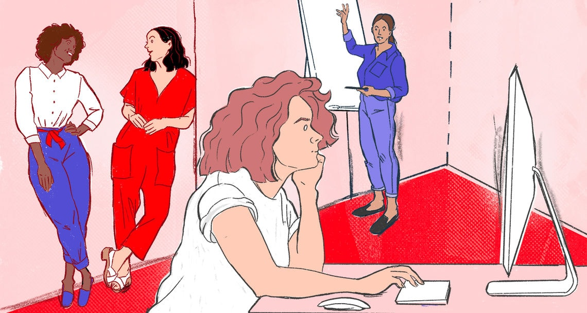

Aufsteigerinnen Studium oder Ausbildung sind fertig - und dann? Was Frauen beim Berufseinstieg beschäftigt, lest ihr hier, im Karriereschwerpunkt von jetzt und Plan W, dem Frauenwirtschaftsmagazin der Süddeutschen Zeitung. PS: Ja, es geht auch um Geld.  Illustration: Daniela Rudolf-Lübke